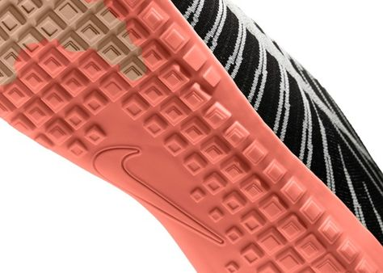

- 1} Bymistaken Quadrillionaire
Chris Reynolds had become the richest man ever in the world when PayPal
accidentally gives man $92 quadrillion.Who is this world’s first quadrillionaire?
56 year old,Chris Reynolds from Pennsylvania had once discovered that PayPal accidentally
gives him $92 quadrillion, to be precise $92,233,720,368,547,800.

- 2} A Waffle Iron Inspired One Of The First Pairs Of Nike Shoes
Bill Bowerman was a track and field coach in the 1950s who didn’t like how running shoes were made.He first created the Cortez shoe but wanted a sneaker that was even lighter and could be worn on a variety of surfaces.
During a waffle breakfast with his wife in 1970, he came up with the idea of using the waffle texture on the soles of running shoes.Waffle-soled shoes made their big debut in the 1972 U.S. Olympic track and field trials in Eugene, Oregon.

- 3} Paint Used To Be Stored In Pig Bladders
For centuries before the invention of the paint tube, artists used to store their paints in pig bladders.When the artist was ready to use the paint, they would puncture a hole in the bladder and squeeze out the desired amount of paint.
They would have to mend the hole when finished and the whole process was quite messy.American painter John G. Rand was the innovator who, in the 19th century, made paint tubes from tin and screw caps.
- 4} Something About Statues
If a statue of a person in the park on a horse has both front legs in the air, the person died in battle.
If the horse has one front leg in the air, the person died as a result of wounds received in battle.
If the horse has all four legs on the ground, the person died of natural causes.

- 5} Most Secure Phones
It is said that Iphone is the most secure phone, as it has ARM based chipset as it shows it in name A15. ARM is secure but hackable. Iphone is not the most safe phone. Iphone was hacked in 5 min by hackers and now there's a new world record,
it was hacked in 1 second by Chinese hackers.Now, I would like to tell you that there are many other phones in market which offer you software security or hardware security ( inshort rugged phones )
.Some of them are Solar in by Sirin Labs which is too unhackable (almost) Bittium Tough 2C rugged and a good secure software but now its time for my favorite unhackable phone which is BlackBerry's Key 2, phones made by BlackBerry are most secure phones.
As no one has ever hacked a black berry phone. "There is no technical way of hacking a BlackBerry, it's impossible," said Gunasekera, during a presentation at the Hack In The Box security conference in Kuala Lumpur.
After hearing this do u know that BlackBerry can be hacked but only and only by putting a virus inherited SD card or by putting virus in it manually, by getting the phone from other person.
After this long story the
Moral of the story is Not a single phone is born/launched which is unhackable.
Because at the end of the day the host is responsible for his\her hacked phone.And It is possible whenthe host give its access to hack or to let into a virus file.

- 6} Handwriting Boosts Cognitive Processes
As opposed to taking notes on a gadget,using pen and paper helps better activate cognitive processes. It improves the capacity to retain knowledge, recall facts and concepts,
and provide a more in-depth comprehension of the subject at hand. Cursive writing
specifically proved to boost brain development in the domains of thinking, language and reasoning. According to a New York Times
study, cursive writing also promotes brain synchronisation between the left and right hemispheres.Handwriting develops brain health
Handwriting, like meditation, boosts cerebral activity in certain areas of the brain.
According to a research conducted at the Indiana University, the act of writing by hand stimulates creativity that is not easily accessible in any other manner. High-tech magnetic resonance imaging proved
that low-tech handwriting enhances neuronal activity in some areas of the brain.
Boosts happiness.According to a health encyclopedia by Rochester University, journaling helps improve the
mood, as writing down thoughts, ideas and emotions on paper gives people a platform to better express themselves and understand their emotions.
. It allows enough time for people to identify and understand their feelings. Writing helps articulate thoughts that
lead people to feel uninspired or demotivated. The process of jotting down emotions on paper has proven to be therapeutic and
helps enhance feelings of happiness as well as reduce stress. Writing enhances creativity and thought processes. Writing helps get our creative juices
flowing and supports organising thought processes. In one of his articles, renowned author Patrick McClean stated that using pen and paper help avoid the
distractions that result from digital platforms. When typing, individuals tend to focus on editing content as they develop it, which is counterproductive to the
creative process. On the other hand,using pen and paper allows people to jot down their creative ideas, fully gather their thoughts and edit later.

- 7} After Sun,A ‘Made In China’ MOON
Chinese scientists have built an ‘artificial moon’ that has lunar-like gravity and is designed to help
prepare astronauts for future exploration missions. The simulator, based in Xuzhou in the Jiangsu province of China, has been
designed in a way that can ‘make gravity disappear,’ according to its designers.Currently, simulating low gravity on Earth requires either
flying in an aircraft that enters a free fall, then climbs back up, or a free fall from a drop tower. But the experiences last only few minutes
THE SIGNIFICANCE
It is expected this ‘artificial moon’ will play an important role in the future missions to the Moon, allowing scientists to
plan exercises and prepare for building in low gravity .The research facility is also expected to help in determining the possibility of human settlement on the Moon.
The new lunar simulator,which is a small 2-feet room sitting in a vacuum chamber,can simulate low or zero gravity ‘for as long as you want’,explained its developers.
Inside the room they have created an artificial lunar landscape, made up of rocks
and dust that are as light as those found on the surface of the Moon.Moon has a gravitational pull that is one-sixth
of the Earth Not just an artificial moon, China has successfully created an ‘artificial sun’, which is a nuclear
fusion reactor that recently superheated to a temperature five times hotter than the Sun and for over 17 minutes.
This artificial sun will eventually make way for clean
energy in the future